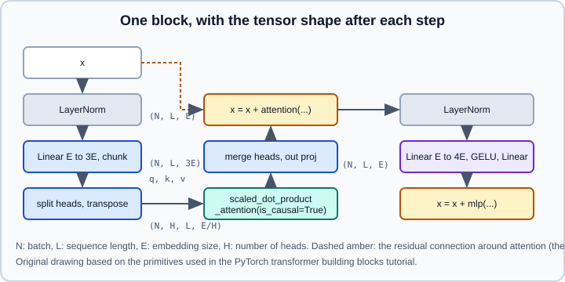

Worked Example: Transformer Building Blocks
|
This content was generated with the assistance of AI and should be verified against the official documentation before being relied on in production. |
Modern language and vision models are stacks of the same block: multi-head self-attention followed by a position-wise feed-forward network, each wrapped in a residual connection and a normalization layer. PyTorch ships ready-made nn.TransformerEncoderLayer, nn.TransformerDecoderLayer and nn.MultiheadAttention, but the official tutorials recommend, and most research code uses, a different route: write the block yourself from nn.Linear, nn.LayerNorm and one fused function, torch.nn.functional.scaled_dot_product_attention (SDPA). This page builds a complete decoder-only model that way, then covers masks, kernel selection, grouped-query attention, variable-length batches and compilation. The theory (queries, keys, values, positional information, why attention scales as \(O(L^2)\)) is in Attention & Transformers; the PyTorch API reference page is Attention, SDPA, FlexAttention & Transformers. The preceding example, Worked Example: Character RNN & seq2seq, is the recurrent architecture that this one replaces.
Examples target Python 3.13 and PyTorch 2.15 and follow the SDPA reference, the torch.nn.attention reference, the SDPA tutorial and the transformer building blocks tutorial. The code was run on Python 3.13 with PyTorch 2.15 on 2026-10-31 (on CPU and Apple MPS, with a small local text file standing in for the training corpus); the backend-selection loop needs a CUDA GPU and was not executed. No loss or sample values are quoted, because they depend on the corpus.
What the official tutorials cover
-
“Accelerating PyTorch Transformers by replacing
nn.Transformerwith Nested Tensors andtorch.compile()” (https://docs.pytorch.org/tutorials/intermediate/transformer_building_blocks.html) builds custom layers from low-level primitives. It requires PyTorch 2.6.0 or later. ItsMultiHeadAttentionmodule usesnn.Linearprojections (a packed projection of size3 * E_totalfor self-attention, separate ones otherwise), splits the heads, callsF.scaled_dot_product_attention, merges the heads and applies an output projection. It then shows how nested tensors with the jagged layout represent variable-length sequences without padding, howtorch.compile()removes eager-mode overhead, and mentions FlexAttention (modify attention scores before the softmax; needstorch.compilefor good performance). It describes a GPT-style layer (causal self-attention plus a feed-forward network with skip connections) as matchingnn.TransformerEncoderLayerwithis_causal=True. -
"(Beta) Implementing High-Performance Transformers with Scaled Dot Product Attention (SDPA)" (https://docs.pytorch.org/tutorials/intermediate/scaled_dot_product_attention_tutorial.html) explains the fused kernels. It lists the backends FlashAttention (
SDPBackend.FLASH_ATTENTION), memory-efficient attention (SDPBackend.EFFICIENT_ATTENTION) and the C++ math implementation (SDPBackend.MATH), thesdpa_kernelcontext manager to choose or restrict them, theis_causalflag and thecausal_upper_leftandcausal_lower_rightbias helpers intorch.nn.attention.bias.
Scaled dot-product attention as a function
SDPA computes \(\mathrm{softmax}(QK^\top \cdot s + B)\,V\) with the scale \(s\) defaulting to \(1/\sqrt{E}\). The documented signature for 2.15 is:
torch.nn.functional.scaled_dot_product_attention(
query, key, value, attn_mask=None, dropout_p=0.0, is_causal=False, *, scale=None, enable_gqa=False)Source: https://docs.pytorch.org/docs/stable/generated/torch.nn.functional.scaled_dot_product_attention.html
Shapes: query is (N, ..., Hq, L, E), key is (N, ..., H, S, E), value is (N, ..., H, S, Ev) and the output is (N, ..., Hq, L, Ev), where L is the target length, S the source length and H the number of key/value heads. scale is keyword-only. The function is marked beta in the reference, so details may change.
The essential rules, all from the reference page:
-
Boolean
attn_mask:Truemeans the position takes part in attention. A float mask is added to the scores. This is the opposite of thekey_padding_maskofnn.MultiheadAttention, whereTruemeans "ignore"; invert with~maskwhen you migrate. The mask must broadcast to(N, ..., Hq, L, S). -
is_causal=Trueapplies a lower-triangular mask; for non-square masks it uses the upper-left alignment ofCausalBias. It cannot be combined withattn_mask; setting both raises an error. -
dropout_pis always applied when it is greater than zero, whatever the module’s mode. Passself.p if self.training else 0.0. -
enable_gqa=Trueturns on grouped-query attention (experimental):Hqmust be divisible byH, and the key and value head counts must match. The reference lists support on CUDA with FlashAttention, cuDNN and the math kernel, and for memory-efficient attention on CUDA; nested tensors are not supported with it. -
Numerical results can differ slightly between backends.
A check against a straightforward implementation is the best way to understand the function:
import math
import torch
import torch.nn.functional as F
N, H, L, E = 2, 4, 6, 8
q, k, v = (torch.randn(N, H, L, E) for _ in range(3))
# manual causal attention
scores = q @ k.transpose(-2, -1) / math.sqrt(E)
causal = torch.tril(torch.ones(L, L, dtype=torch.bool))
scores = scores.masked_fill(~causal, float("-inf"))
manual = scores.softmax(dim=-1) @ v
fused = F.scaled_dot_product_attention(q, k, v, is_causal=True)
print(torch.allclose(manual, fused, atol=1e-5)) # expected: TrueSource: reference algorithm from https://docs.pytorch.org/docs/stable/generated/torch.nn.functional.scaled_dot_product_attention.html
A multi-head causal self-attention module

The module below implements the steps of the building blocks tutorial for the self-attention case:
import math
import torch
import torch.nn as nn
import torch.nn.functional as F
class CausalSelfAttention(nn.Module):
def __init__(self, dim: int, n_heads: int, dropout: float = 0.0):
super().__init__()
assert dim % n_heads == 0, "dim must be divisible by n_heads"
self.n_heads = n_heads
self.head_dim = dim // n_heads
self.dropout = dropout
self.qkv = nn.Linear(dim, 3 * dim) # one matmul for Q, K and V
self.proj = nn.Linear(dim, dim)
def forward(self, x, attn_mask=None):
# x: (N, L, E)
q, k, v = self.qkv(x).chunk(3, dim=-1) # each (N, L, E)
q, k, v = (t.unflatten(-1, [self.n_heads, self.head_dim]).transpose(1, 2)
for t in (q, k, v)) # each (N, H, L, E/H)
y = F.scaled_dot_product_attention(
q, k, v,
attn_mask=attn_mask,
dropout_p=self.dropout if self.training else 0.0, # dropout only while training
is_causal=attn_mask is None, # cannot combine with attn_mask
)
y = y.transpose(1, 2).flatten(-2) # merge heads: (N, L, E)
return self.proj(y)
class Block(nn.Module):
def __init__(self, dim, n_heads, mlp_ratio=4, dropout=0.0):
super().__init__()
self.ln1 = nn.LayerNorm(dim)
self.attn = CausalSelfAttention(dim, n_heads, dropout)
self.ln2 = nn.LayerNorm(dim)
self.mlp = nn.Sequential(
nn.Linear(dim, mlp_ratio * dim),
nn.GELU(),
nn.Linear(mlp_ratio * dim, dim),
nn.Dropout(dropout),
)
def forward(self, x, attn_mask=None):
x = x + self.attn(self.ln1(x), attn_mask) # pre-norm: normalize, transform, add back
x = x + self.mlp(self.ln2(x))
return xSource: adapted from https://docs.pytorch.org/tutorials/intermediate/transformer_building_blocks.html (projection, head split, SDPA call and head merge)
Design choices and pitfalls:
-
Pre-norm versus post-norm. The block normalizes before each sub-layer (pre-norm), which trains more stably without a long warm-up than the original post-norm arrangement.
nn.TransformerEncoderLayerhas anorm_firstargument for the same choice. See Training Deep Networks for normalization. -
Head split.
unflatten(-1, [H, E/H])turns(N, L, E)into(N, L, H, E/H)andtranspose(1, 2)gives the(N, H, L, E/H)layout that SDPA expects. Usingviewon a transposed tensor without.contiguous()orreshapeis a common error. -
Mask semantics. If you add padding masks, remember
Truemeans keep. A mask combined withis_causalis not allowed, so a padded causal batch needs a combined boolean mask (below). -
Dropout. The attention-weights dropout inside SDPA is applied whenever
dropout_p > 0; the guard onself.trainingis mandatory. -
Bias terms and parameter count. Many recent models drop biases (
bias=False);nn.Linearacceptsbias=False.
Padding plus causal masking
With variable-length sequences in a padded batch, build one boolean mask that combines both rules and pass it as attn_mask:
import torch
def padded_causal_mask(lengths: torch.Tensor, max_len: int) -> torch.Tensor:
"""Boolean mask (N, 1, L, L): True where query i may attend to key j."""
pos = torch.arange(max_len)
causal = pos[None, :] <= pos[:, None] # (L, L): j <= i
keep = pos[None, :] < lengths[:, None] # (N, L): real tokens
return (causal[None, :, :] & keep[:, None, :])[:, None] # (N, 1, L, L)
mask = padded_causal_mask(torch.tensor([3, 5]), 5)
print(mask.shape, mask[0, 0].int())Source: mask semantics from https://docs.pytorch.org/docs/stable/generated/torch.nn.functional.scaled_dot_product_attention.html
A padded query row for a very short sequence still attends to its allowed real keys, so no row is fully masked; a row with every key masked would produce NaN after the softmax in the math reference, so avoid constructing one.
A small decoder-only language model
class TinyGPT(nn.Module):
def __init__(self, vocab, dim=128, n_heads=4, n_layers=4, max_len=256, dropout=0.1):
super().__init__()
self.max_len = max_len
self.tok = nn.Embedding(vocab, dim)
self.pos = nn.Embedding(max_len, dim) # learned absolute positions
self.drop = nn.Dropout(dropout)
self.blocks = nn.ModuleList(Block(dim, n_heads, dropout=dropout) for _ in range(n_layers))
self.ln_f = nn.LayerNorm(dim)
self.head = nn.Linear(dim, vocab, bias=False)
self.head.weight = self.tok.weight # weight tying
self.apply(self._init)
@staticmethod
def _init(m):
if isinstance(m, (nn.Linear, nn.Embedding)):
nn.init.normal_(m.weight, mean=0.0, std=0.02)
if isinstance(m, nn.Linear) and m.bias is not None:
nn.init.zeros_(m.bias)
def forward(self, idx, targets=None):
n, l = idx.shape
x = self.drop(self.tok(idx) + self.pos(torch.arange(l, device=idx.device)))
for block in self.blocks:
x = block(x)
logits = self.head(self.ln_f(x)) # (N, L, vocab)
loss = None
if targets is not None:
loss = F.cross_entropy(logits.reshape(-1, logits.size(-1)), targets.reshape(-1))
return logits, loss
@torch.inference_mode()
def generate(self, idx, max_new_tokens, temperature=1.0, top_k=None):
self.eval()
for _ in range(max_new_tokens):
window = idx[:, -self.max_len:] # crop to the context length
logits, _ = self(window)
logits = logits[:, -1, :] / temperature
if top_k is not None:
kth = torch.topk(logits, top_k).values[:, -1, None]
logits = logits.masked_fill(logits < kth, float("-inf"))
nxt = torch.multinomial(logits.softmax(-1), num_samples=1)
idx = torch.cat([idx, nxt], dim=1)
return idxSource: structure follows the GPT-style layer described in https://docs.pytorch.org/tutorials/intermediate/transformer_building_blocks.html; the training and sampling code is written for this page.
The model is trained like any other PyTorch model (see The Training Loop & Evaluation). The data here is a text file turned into integer ids at character level, and each training example is a random window whose targets are the inputs shifted by one position:
import torch
text = open("input.txt", encoding="utf-8").read()
chars = sorted(set(text))
stoi = {c: i for i, c in enumerate(chars)}
data = torch.tensor([stoi[c] for c in text], dtype=torch.long)
n_train = int(0.9 * len(data))
train_data, val_data = data[:n_train], data[n_train:]
def get_batch(split, batch_size=64, block=128, device="cpu"):
d = train_data if split == "train" else val_data
ix = torch.randint(len(d) - block - 1, (batch_size,))
x = torch.stack([d[i:i + block] for i in ix])
y = torch.stack([d[i + 1:i + block + 1] for i in ix]) # next-token targets
return x.to(device), y.to(device)
device = torch.accelerator.current_accelerator() if torch.accelerator.is_available() else torch.device("cpu")
model = TinyGPT(len(chars), max_len=128).to(device)
opt = torch.optim.AdamW(model.parameters(), lr=3e-4, weight_decay=0.1, betas=(0.9, 0.95))
for step in range(2000):
model.train()
x, y = get_batch("train", device=device)
_, loss = model(x, y)
opt.zero_grad(set_to_none=True)
loss.backward()
nn.utils.clip_grad_norm_(model.parameters(), 1.0)
opt.step()
if step % 200 == 0:
model.eval()
xv, yv = get_batch("val", device=device)
with torch.inference_mode():
_, val_loss = model(xv, yv)
print(step, round(loss.item(), 3), round(val_loss.item(), 3))
start = torch.zeros((1, 1), dtype=torch.long, device=device)
print("".join(chars[i] for i in model.generate(start, 200, top_k=20)[0].tolist()))Source: standard training recipe; optimizers are documented at https://docs.pytorch.org/docs/stable/optim.html and evaluation under inference_mode at https://docs.pytorch.org/docs/stable/generated/torch.inference_mode.html
Choosing the attention kernel
SDPA dispatches to one of several implementations depending on dtype, device, shapes, masks and the PyTorch build. The SDPA tutorial names FlashAttention, memory-efficient attention and the math fallback; the torch.nn.attention reference additionally documents SDPBackend, the sdpa_kernel context manager, the bias module (causal bias classes), the flex_attention module and a varlen module for variable-length attention using Flash Attention. Use the context manager to benchmark a backend or to assert which one runs:
import torch
import torch.nn.functional as F
from torch.nn.attention import SDPBackend, sdpa_kernel
q, k, v = (torch.randn(8, 16, 1024, 64, device="cuda", dtype=torch.bfloat16) for _ in range(3))
for backend in (SDPBackend.FLASH_ATTENTION, SDPBackend.EFFICIENT_ATTENTION, SDPBackend.MATH):
try:
with sdpa_kernel(backend):
F.scaled_dot_product_attention(q, k, v, is_causal=True)
print(backend, "ok")
except RuntimeError as e:
print(backend, "not available:", str(e)[:60])Restricting the context to one backend raises a RuntimeError if that backend cannot handle the inputs, which is what makes it useful as an assertion. The fused kernels need a supported GPU and half-precision dtypes (float16 or bfloat16) for FlashAttention; on CPU or for unsupported cases the math implementation runs. The exact constraints change between releases, so consult the reference before depending on one. For autocast and dtype handling see Mixed Precision with torch.amp.
Because the mask matters for kernel choice, prefer is_causal=True over an explicit boolean causal mask when no padding is involved: it lets the fused kernels skip the masked blocks. The torch.nn.attention.bias module offers causal_upper_left and causal_lower_right for non-square cases such as decoding with a key-value cache, where \(L \ne S\).
Grouped-query attention
Many recent models share each key/value head among several query heads to shrink the key-value cache. SDPA supports this through enable_gqa=True with Hq divisible by H:
import torch
import torch.nn.functional as F
q = torch.randn(2, 8, 16, 64) # 8 query heads
k = torch.randn(2, 2, 16, 64) # 2 key/value heads (each serves 4 query heads)
v = torch.randn(2, 2, 16, 64)
out = F.scaled_dot_product_attention(q, k, v, is_causal=True, enable_gqa=True)
print(out.shape) # torch.Size([2, 8, 16, 64])Source: https://docs.pytorch.org/docs/stable/generated/torch.nn.functional.scaled_dot_product_attention.html
The reference marks GQA experimental and lists backend support limits (see above); it also states it is not supported with nested tensors. Whether a particular backend accepts your shapes on CPU is not documented in the reference, so test it.
Variable-length batches and nested tensors
Padding wastes compute on short sequences. The building blocks tutorial shows nested tensors with the torch.jagged layout, which hold sequences of different lengths without padding. The creation and conversion calls from the tutorial:
import torch
lengths = [7, 12, 5]
nt = torch.nested.nested_tensor(
[torch.randn(L, 64) for L in lengths], # add device="cuda" to build it on the GPU
layout=torch.jagged,
)
print(nt.shape) # torch.Size([3, j1, 64]): the second dimension is ragged
# the tutorial feeds nt to its MultiHeadAttention module (with torch.compile) and converts back with:
# padded = out.to_padded_tensor(0.0)The tutorial reports large speed and memory improvements for attention on nested inputs compared with padded nn.MultiheadAttention, with results that vary by hardware, and its module is written to accept nested inputs. The TinyGPT code above is written for dense tensors; for jagged inputs follow the tutorial’s module rather than assuming that every operation above supports them. For packed variable-length sequences, the torch.nn.attention.varlen module is the documented alternative (see the reference for its current API).
Compiling the model
torch.compile fuses the surrounding element-wise operations (LayerNorm pieces, GELU, residual additions) that eager mode launches as separate kernels:
compiled = torch.compile(model) # first call compiles; later calls reuse the compiled graph
x, y = get_batch("train", device=device)
_, loss = compiled(x, y)Training with a fixed block length compiles once; feeding sequence lengths that change every step triggers recompilation or dynamic-shape graphs, see Graph Breaks, Recompilation & Dynamic Shapes and torch.compile. The tutorial credits the combination of nested tensors, SDPA and torch.compile for its speed-ups, not any one of them alone.
Comparing with the built-in layers
| Built-in | Notes |
|---|---|
|
Projections, scaling and softmax in one module. Its |
|
Full layers with |
|
Complete encoder-decoder (the original architecture). The tutorial shows how to replace it with custom layers. |
|
The fused attention primitive; what the custom block and many libraries use under the hood. |
For pre-trained transformer models and tokenizers use Hugging Face (Transformers Pipelines) rather than training your own; see Transfer Learning, Fine-Tuning & Foundation Models. Distributed training of such models is covered from Distributed Overview, torchrun & Elastic. Exporting for serving is in torch.export.